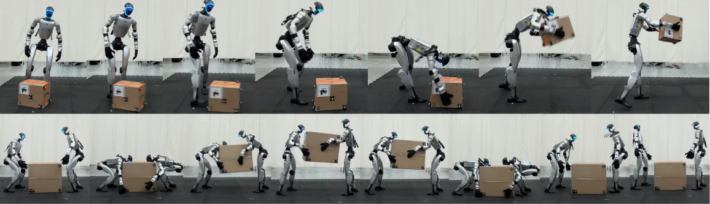
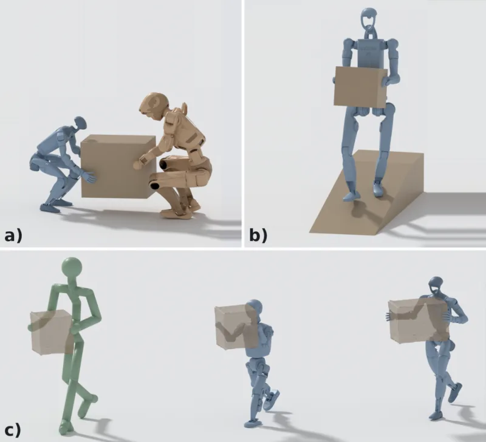

PriMoRetarget：用优先级层级替代权重调参的人形机器人动作重定向
PriMoRetarget: Humanoid Motion Transfer Through Prioritized Motion Retargeting
把重定向从加权多目标求和改成显式优先级层级，并在每一步用零空间投影 P^{H,λ}=I−(J^H)ᵀ(J^H(J^H)ᵀ+λI)⁻¹J^H 把低优先级梯度投影掉，只允许其沿保持高优先级误差的方向更新；利用逐帧可分性把 (Tm)×(Tm) 投影分解为 T 个 m×m 系统，复杂度从 O(T³m³) 降到 O(Tm³)，并把时间平滑/关节限位/地面穿透作为 free 目标直接累加、训练初期用加权和 warmup；层级为 (1) 足部落点 (2) 接触保持 (3) 其余姿态与交互。角色-角色交互（Inter-X）接触保持 78.8% vs 最佳基线 26.9%，RL 跟踪成功率 93.6% vs 66.1%。
contact
RL success
complexity
ablation
作者、单位与技术谱系 · Research context
作者与单位
研究脉络
- 任务优先级/零空间投影的 IK 与全身控制（Sentis & Khatib；Kanoun et al.；[31,6,7,9,32,33]）方法基座关系：把“更高优先级目标固定后，用剩余自由度服务低优先级目标”这一经典机制，从在线控制/MPC 搬到动辄数千帧的离线动作重定向，并处理非二次目标。[论文 §II、§III-A]
- Ho, Komura & Tai 2010（空间关系保持的动作适配，[4]）表示来源关系：交互目标的表示沿用“用关键点对的相对位移刻画交互”，并在本文里被放进优先级层级的第一/第二级。[论文 §IV-B、表 I]
- GMR / OmniRetarget / PHC（[2]、[5]、[12]）问题相邻工作关系：三套常用重定向基线分别代表加权和 IK、基于交互网格的约束优化与轨迹级关键点拟合，是本文要对比并超越的“加权多目标”主流做法。[论文 §V]
- 本篇推进：层级化 + 逐帧可分 + free 目标 + warmup本篇推进关系：把优先级层级工程化到可处理长序列与多角色：利用逐帧可分性把投影降到 O(Tm³)，并为不适配严格层级的目标引入 free 目标机制，另设加权和 warmup 处理远初始化。[论文 §III-B、§V-C]
合作网络
- FieldAI ↔ Simon Fraser University 跨机构共同署名FieldAI（Nicholas Ioannidis、Dun Yang、Max Smith、Tue Vu、Shayegan Omidshafiei） → Simon Fraser University（Ziyu Zhang、Xue Bin Peng）关系：共同署名（跨机构）[arXiv 官方 HTML 首页]
- Xue Bin Peng 的多重机构署名Xue Bin Peng → NVIDIA / Alberta Machine Intelligence Institute (Amii)关系：同一作者的多机构署名（原文作者单位标注）[arXiv 官方 HTML 首页]
- 对公开数据集与基线实现的依赖PriMoRetarget 评测 → LAFAN1 / OMOMO / Inter-X 数据集，PHC / GMR / OmniRetarget 基线关系：明确技术依赖（非共同署名）[论文 §IV-A、§V]
- 公开资助标注PriMoRetarget 论文作者（致谢标注） → FieldAI / NSERC RGPIN-2015-04843 / CIFAR AI Chairs关系：公开资助（致谢标注）[论文致谢]
作者与单位来自论文首页作者单位行（FieldAI 与 Simon Fraser University / NVIDIA / Amii）。并列第一作者的具体姓名原文未逐一标注，本页明确标注为基于版面的解读；技术谱系依据正文引用与对照关系，属基于来源的解读。合作网络仅记录原文公开的署名与资助信息，未发现可核验的导师/师生关系，故不推断。表 II 中多角色+物体行的数值在抓取的 HTML 中存在排版错位，已在“边界与风险”中标为待核验。
方法本质拆解 · What actually changed
是不是微调？
重定向本身不是学习：PriMoRetarget 直接对目标动作参数 x（根位置/朝向 + 关节角）做梯度式优化，没有任何网络权重被训练。论文里唯一涉及学习的是下游验证环节——对每条重定向动作各训练一个 PPO 策略（沿用 DeepMimic 设定、固定超参）来测可跟踪性，而该策略是评测工具，不是方法本体。
有没有额外约束？
新增的“约束”是层级化的硬优先级：低优先级更新必须落在高优先级雅可比 J^H 的零空间内，即 J^H δx = 0，用阻尼投影 P^{H,λ} 实现；论文同时强调保留整个误差向量 f^H 而非仅标量损失，避免分量间补偿。层级为足部落点 → 接触保持 → 其余姿态/交互。另有三类 free 目标（时间平滑、关节限位、地面穿透）不进入层级而直接累加，以及尺度约束：单角色用身高比 s_{s→t}，多角色用共享场景尺度 s_†（物体交互取 1 以保持物体几何与轨迹）。
推理/后端到底做了什么？
优化是离线整段进行的：每轮迭代依次对每个优先级目标计算梯度 → 投影到更高优先级雅可比的零空间 → 累加，再加上 free 目标梯度直接累加 → 统一按步长 α 更新 x；开始时先用加权和 warmup 若干步，再切到层级。实现上把时间块对角的雅可比拆成 T 个 m×m 小系统在 GPU 上批量求解。它没有引入第二级求解器、也没有做物理仿真或 RL 精修，输出即为参考轨迹，可直接用于策略训练或实机部署。
方法本质是什么？
本质是把“多目标冲突”从数值加权问题改成几何正交问题：加权和只能表达相对偏好，最优解仍可能牺牲高权重目标；而零空间投影规定低优先级更新方向必须与高优先级误差的梯度方向正交，于是高优先级目标在迭代中保持一阶不变。它改变的不确定性是“关键交互特征（足部落点、接触）在跨本体迁移后是否仍然成立”，靠的是把保留这些特征写成硬优先级、把不可靠的分量放进 free 目标与 warmup 过渡，而没有改变源动作的结构，也没有自动决定层级。
输入是人类动捕的动作序列、源-目标关键点对应与一个人工指定的优先级层级；改变的位置是目标机器人（主要为 Unitree G1）逐帧的根位姿与关节角参数（无任何权重训练）；约束与合并动作是把低优先级梯度投影到高优先级雅可比的零空间、并批量求解逐帧小系统，同时直接累加平滑/限位/地面等 free 目标；直接效果是接触保持与足滑指标领先（Inter-X 接触 78.8% vs 35.2%），并使 PPO 跟踪成功率达到 93.6%。

桥接价值Bridge
桥接价值
这篇工作的价值在于它处理的是“约束冲突时谁让谁”这个几乎所有约束优化系统都会遇到的问题，而且给出了一个不需要调权重、可离线、可扩展到长序列的机制。对具身系统而言，重定向质量直接决定下游 RL 参考轨迹是否可用：论文用 50 条动作训练 PPO 跟踪策略，角色-角色交互上本文重定向的动作成功率 93.6%、体跟踪误差 4.5 cm，而 OmniRetarget 66.1%、PHC 72.8%、GMR 57.2%——这条“重定向质量 → 下游可跟踪性”的链路把预处理质量变成了可量化的任务后果。对你的价值有两层：一是方法层，优先级层级 + 零空间投影可迁移到任何“多个互相冲突的几何/运动约束”的场景；二是评测层，它示范了如何用下游任务成功率而非单一重建误差来判断先验质量。
方法与模块Method
方法摘要
把动作重定向写成 x* = argmin Σ_k w_k L_k(x) 的加权多目标问题是既有做法；本文改为：把目标按优先级排序，第 k 级只在“对所有更高优先级目标仍最优”的解集 S^{k−1} 内最小化 L_k，并把这一定义在每一步局部地用零空间投影实现——对高优先级误差向量 f^H（注意是向量而非标量损失，以免各分量之间互相补偿）线性化得 J^H δx = 0，再用 P^H = I − (J^H)ᵀ(J^H(J^H)ᵀ)⁻¹J^H 投影低优先级梯度，秩亏时改用带阻尼的 P^{H,λ}。为处理长序列，利用“多数重定向目标逐帧可分”的结构，使整段雅可比在时间上块对角，把 (Tm)×(Tm) 投影拆成 T 个独立的 m×m 小系统并批量并行求解。时间平滑、关节限位与地面穿透这类作用于全部自由度的目标不适合放进严格层级，被列为 free 目标直接加到投影后的梯度上；此外用一段加权和 warmup 先让初始化靠近合理解，再切换到优先级层级。实验用的共享层级为：(1) 足部位置匹配，(2) 与物体或另一角色的接触保持，(3) 其余姿态与交互目标。
可迁移模块
第一，零空间投影的实现细节可直接复用：论文强调保留误差向量而非仅保留标量损失，防止误差分量之间互相补偿；并对秩亏情形给出阻尼形式 P^{H,λ}，这在你的几何约束系统（例如同时要求共视一致性、尺度一致性与外参一致）里是一个现成的“硬优先级”工具。第二，“逐帧可分 → 块对角 → 批量小系统”的降复杂度思路，可把任何时间上可分解的约束优化从 O(T³) 级别降到 O(T)，论文用图 5 证明其耗时在 RTX 5090 上近似常数（密集解法则随长度三次增长，且其 LAFAN1 序列超过 5000 帧）。第三，“free 目标”与“warmup”两条工程经验很实用：把不适配严格层级的目标（平滑/限位/地面）单独累加，并在初始化远离解时先用加权和过渡，二者都被消融证明必要。

证据Evidence
关键证据与数字
来源：论文表 II、表 III、表 IV 与图 5、图 7。(1) 角色-物体（OMOMO，大盒子类）：本文接触保持 96.9 ± 3.7%，OmniRetarget 86.4 ± 22.6%、PHC 63.2 ± 24.5%、GMR 48.6 ± 22.4%；RL 跟踪成功率 100.0 ± 0.0% vs 99.1% / 86.6% / 79.8%，体跟踪误差 2.8 ± 0.5 cm vs 3.5 / 7.4 / 7.9 cm，物体跟踪误差 3.0 ± 1.4 cm vs 5.8 cm（OmniRetarget）。(2) 角色-角色（Inter-X 辅助子集）：本文接触保持 78.8 ± 13.7% vs OmniRetarget 26.9 ± 21.6%、PHC 35.2 ± 24.1%、GMR 26.4 ± 19.4%；RL 成功率 93.6 ± 24.0% vs 66.1% / 72.8% / 57.2%，体误差 4.5 ± 5.8 cm。(3) 单角色（LAFAN1）：足滑速度 3.5 ± 1.1 cm/s vs GMR 5.2、OmniRetarget 9.4；RL 成功率 100.0% vs 90.0% / 90.0%，体误差 1.8 ± 0.7 cm。(4) 多角色+物体（35 分钟自建协同搬运数据）：本文接触保持 92.4 ± 9.5% vs GMR 29.3%、OmniRetarget 26.5%，但 RL 成功率仅 62.6 ± 38.9%，作者承认协同搬运动作仍然困难。(5) 消融（表 IV，LAFAN1）：去掉 warmup 后穿透时长从 12.2% 恶化到 90.1%、足滑 3.5 → 10.2 cm/s；把 free 目标放进最后一级（Free-last）后抖动从 135.6 升到 160.4 m/s³。(6) 加权和对照（表 III）：在 OMOMO 上 WS-uniform 接触保持 67.2%、WS-10× 为 88.5%，仍低于本文 96.9%；在 Inter-X 上 WS-uniform 73.7%、WS-10× 75.0%，低于本文 78.8%。(7) 泛化（图 7）：同一层级用于 Unitree G1 与 DEEP Robotics DR02 协同搬运、Unitree H1-2 下坡搬箱，并把同一 OMOMO 动作迁移到 Booster T1 与 G1，物体放大 1.5 倍时接触目标仍被保持（而非严格跟随原动作）。
边界与下一步Limits & Next Step
边界与风险
作者明确承认的局限：(1) 当前优先级层级由人工指定，层级本身不自动学习或自适应；(2) 方法主要保持源动作结构，因此源数据里的伪影（抖动、互穿、采集环境不一致）会被原样传递到重定向结果；(3) 被操作物体的轨迹大体跟随源动作，当物体运动不适配目标本体时，交互缺乏自适应能力。我们另外要提示的风险：其一，评测里各数据集的最优方法并不一致（例如 LAFAN1 上 OmniRetarget 的穿透时长 1.5%、穿透深度 0.7 cm 与足浮 0.6 cm 都优于本文的 12.2%、3.9 cm、1.4 cm，说明本文的层级设计并非在所有指标上占优，而是把指标优势集中在被赋予高优先级的接触与足滑上）；其二，表 II 中多角色+物体一列的数值排版在抓取的 HTML 中存在错位，其中本文该行的成功率与误差值需要与原文表格复核，标注为待核验；其三，RL 跟踪评测使用固定超参与各方法自身重定向产物，成功率的比较公平性依赖“重定向质量是唯一差异”这一假设。部分泛化结果（图 7 的多本体迁移）为定性展示，无对应指标表。
下一步实验
(1) 在你的多约束几何/状态估计系统里，把“加权求和”换成“优先级层级 + 零空间投影”，选两组天然冲突的约束（例如“位姿先验一致”与“尺度/重力一致”）做最小 A/B，观察高优先级残差是否被真正压制、以及低优先级目标是否只是被牺牲。(2) 复现其逐帧可分 → 块对角 → 批量小系统的实现，测出在你的规模下相对密集求解的实际加速比（论文给出 O(T³m³) → O(Tm³) 与近常数耗时）。(3) 照搬它的两项工程技巧：把“不适配严格层级”的正则项列成 free 目标、以及在初始化偏离较大时用加权和 warmup；用消融方式确认二者在你的系统里是否同样必要（论文对应 LAFAN1 穿透时长 12.2% vs 90.1% 的差异）。(4) 采用它“下游任务成功率 + 体/物体跟踪误差”作为参考轨迹质量的验收方式，替换仅看重建/对齐误差的做法。

